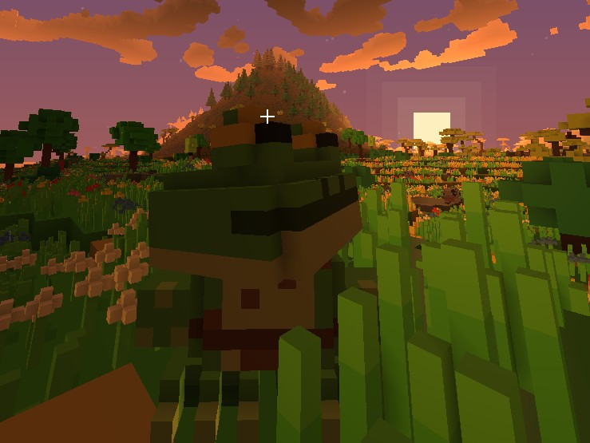

Cube Unbound
A voxel action RPG and sandbox with a 64 km open world, ten playable races and levels from 1 to 500. It runs on a custom engine written in C++20 on plain Win32, with no external libraries, and all of its content is open to mods.
Download Alpha 0.1 (free) Join the Discord Game site Browse the wiki in English r/CubeUnbound
The game
- Open world in rings. The world grows outward from the spawn point to about 64 km. The farther you go, the higher the level of what lives there, from 1 up to 500.
- Ten races, three skill branches each. Every race changes your base stats and has its own trait.
- Dungeons with hordes. Each room throws a horde from the faction that holds it; a boss waits at the end and a loot crypt opens when it falls.
- Taming and mounts. Feed a creature its favourite food to tame it. The big ones can be ridden, and some fly or swim.
- Building and crafting. Mining with tool grades, forges and anvils, furniture you place and rotate, farming, fishing and cooking.
- LAN multiplayer. One player hosts their world and friends join with their own characters.
The engine
- Written from scratch in C++20 on the Win32 API. No engine, no third-party libraries.
- DirectX 11 and OpenGL renderers that can be swapped while the game is running.
- Built to stay small and light: the whole game is a single executable of a few megabytes.
- Windows only for now.
Modding
Almost everything in the game is data: creatures, items, recipes, dungeons and furniture are JSON files, and models are MagicaVoxel .vox files. You add content by dropping files into the mods folder; no programming needed.
Modding guide · Community mods portal (both through automatic translation).
Coming next
Autonomous companions (LPC) that live by the same rules as the player, the final boss, active ultimate skills and potions are in the works. See what is coming.
Status
Cube Unbound is made by a solo developer from Mexico. Alpha 0.1 is free and available now. From Alpha 0.2 on, the game will be paid: there is no company behind Cube Unbound, just one person, and he needs to eat too. This wiki is generated from the real game data, so what you see here is what exists in the game today.